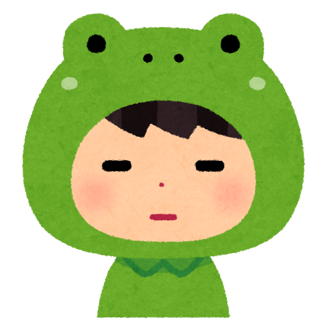

\結果発表/
蛙化度: {{percent}} %
{% if percent >= 90 %}
カエルになっちゃう！？

{% elif percent >= 60 %}
まあまあだね

{% elif percent >= 40 %}
よくやった 
{% else %}
すばらしい！！

{% endif %}
{% for point in situation2_list %}
\解説/
Great:車道側を歩く
Good:1列で歩く
Frog:めっちゃ早歩き
男性が車道側を歩くことは、多くの人々に好意的に受け取られます。 しかし、歩道が狭い場合や交通量が多い場合などは、1列で歩くことの方が正解の場合があります。 「Flog」回答は、相手を思いやる気持ちに欠けていると取られるので、避けるようにしましょう。
Great:相手のことを引き出す
Good:話しを遮る
Frog:一方的に話す
デート中は、ポジティブな話題や共通の趣味、楽しい思い出などを話すように心がけると良いでしょう。 また、相手の反応を見ながら適度に質問を挟み、相手にも話す機会を与えるようにしましょう。 一方的に話すのは、相手を疲れさせてしまう場合があるので、避けるようにしましょう。
Great:会話も楽しみながら食事をする
Good:肘をつきながら食べる
Frog:口に入れたまま話す
話題は軽めで、共通の趣味や最近の出来事などが良いでしょう。 また、食事の間には適度なペースで食べ物を口に運び、相手の話に耳を傾けることが大切です。 肘を突いたり、口に入れたまま話すのは、相手に不快感を与えてしまうことがあるので気を付けましょう。 ASMRみたいになる人は、あごの力が弱い可能性があります。
Great:手を洗い清潔なハンカチで拭く
Good:自然乾燥
Frog:服で拭く
手を洗い、清潔なハンカチで拭くことを心がけることで、衛生的であり、相手に対して良い印象を与え、快適なデートを続けることができます。 自然乾燥や服で拭く行為は、清潔感が無いうえに、菌の繁殖につながるのでおすすめできません。
Great:制汗剤などで臭くない
Good:爪長めで強そう
Frog:髪はボサボサで自然体
香りを整えることはマナーの一部ですが、強すぎる香りには注意が必要であるため適度な香りの香水やボディスプレーを使用しましょう。 爪などの細かい部分の身だしなみを気を付けることで、周りのことを気遣うことができるようにもなるでしょう。